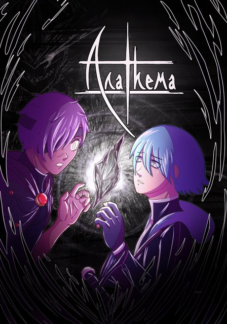

Project Anathema
What is Anathema?
Anathema is an upcoming graphic novel created by Marlie Fitch. Inspired by a wide variety of manga and role-playing video games, this graphic novel transforms tropes found within these mediums to create something entirely new.

The Story Begins...
In the land of Khaos: a lost continent drifting in the Abyss. The story follows Blaise Kresnik, a knight in training who encounters a mysterious young man who broke into his home. The young man, clenching a black crystal in his hand, enacts a forbidden ritual. His soul is transferred inside Blaise’s body. The two struggle for control over Blaise’s body, meanwhile right outside his home, enemy forces invade the country...
Volume I of Anathema consists of five chapters:
- Aoife
- Together Forever
- The Stone City, Aaorith
- Khaotic Attack
- The Colossal
Development History
While Anathema is a graphic novel, it was my love for video game storytelling that inspired me to create a story of my own. Series like Megami Tensei, Fire Emblem, and Kill the Past have deeply influenced both my art and writing style. Elements from these series can be felt within the world of Anathema, yet are transformed in order to create a unique reading experience.
In 2021, I had a vague idea of a plotline and characters for Anathema, but it wasn’t until 2023 when I finally began working on the series. While my enrollment as a full-time student created many hiatuses, my passion and love for this project has led me to dedicate at least one hour per day into Anathema (and often would one hour turn into two hours, then three, then four, then...).
Production Timeline
- 2021 | Conception Stages: Anathema was nothing more than an idea.
- 2023 | Early Production: a few pages were created in Clip Studio Paint to test out the art style.
- 2024-2025 | Main Production: The majority of Volume I were made during these years, with there still being hiatuses along the way due to college.
- 2026 | Completion of Volume I: Anathema Volume I is planned to come out in the summer of 2026!
Anathema still has a long way to go from here, but with the release of Volume I on the horizon, the story is only beginning!